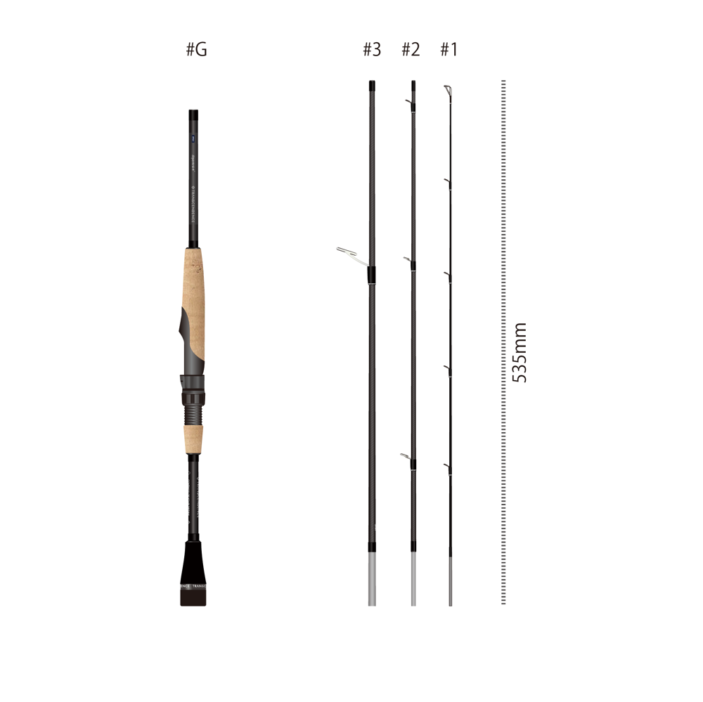
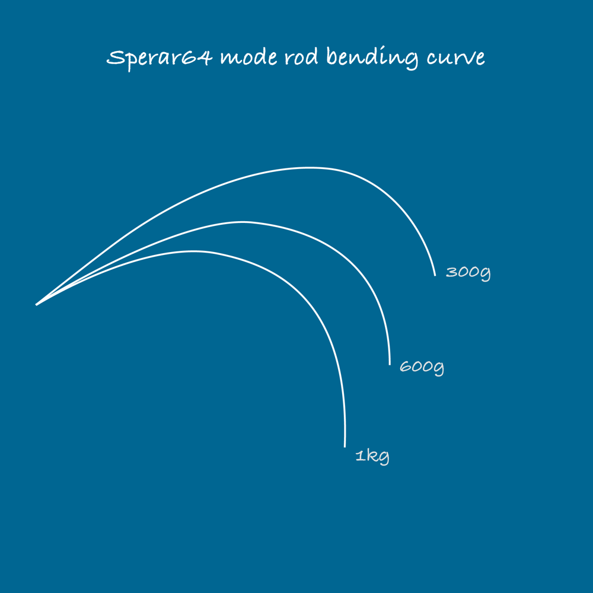
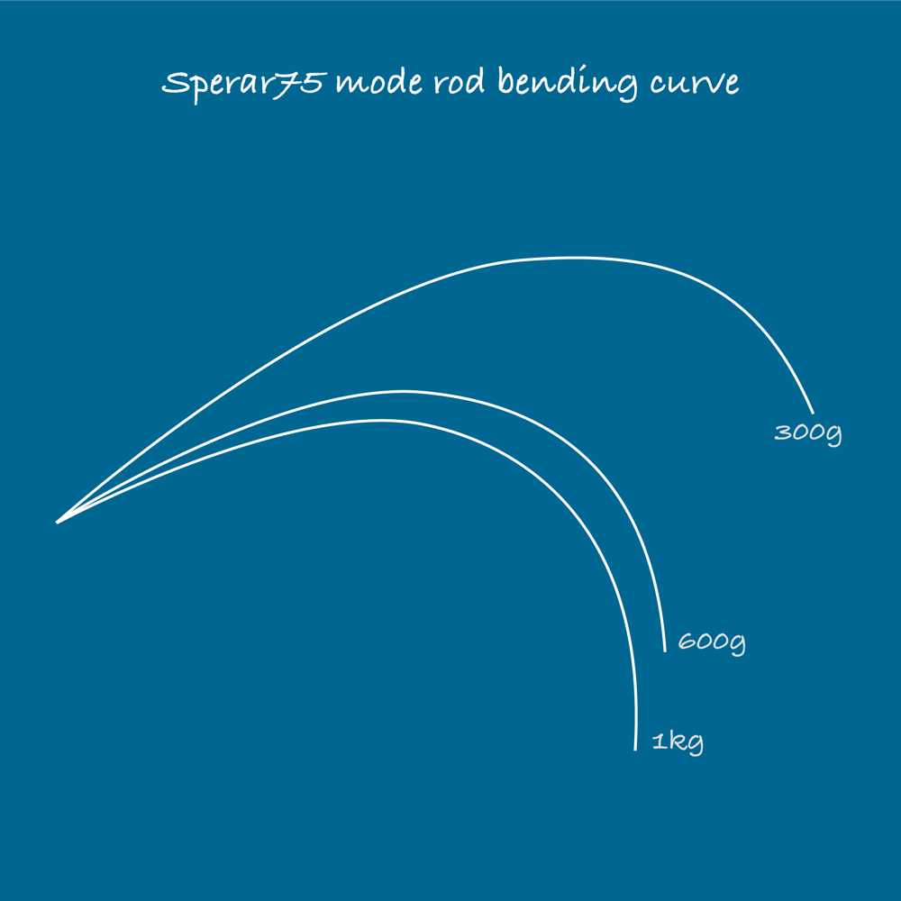
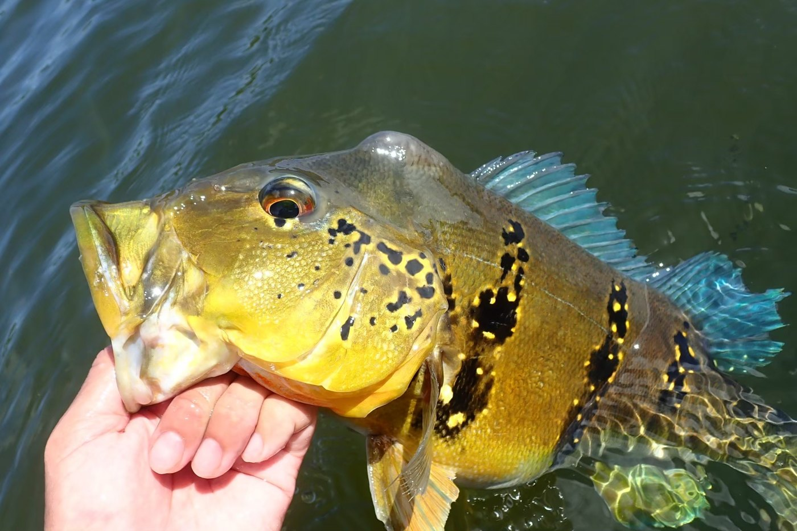
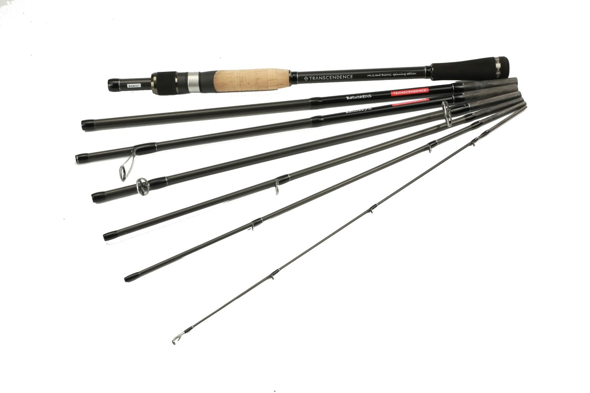
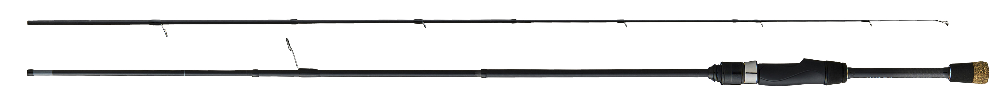

スペラール64S+
（Sperar64S+）
スペラール64S+は、パックロッド専門ブランドTRANSCENDENCE（トランスセンデンス）の、フィネスのためのスピニングロッドです。コンセプトは「Finess = Fun」。
6.4ftの1本だった「スペラール64S」を、ブランクスから継ぎ方まですべて作り直し、7.5ftにも組み替えられる2in1に進化させたモデルです。ワンピースのフィネスロッドに負けない軽さと感度を、仕舞寸法535mmのパックロッドで実現したのが最大の特徴。バスのダウンショットやネコリグから、堤防のアジ・メバル、湖のトラウトまで、どこへでも持って行けます。

画像出典:TRANSCENDENCE公式HP
スペック
- メーカー
- TRANSCENDENCE（トランスセンデンス）
- タイプ
- スピニングロッド（フィネス・2in1可変レングス）
- 長さ
- 6.4ft／7.5ft
- 継数
- 6.4ftは4ピース、7.5ftは5ピース
- 仕舞寸法
- 535mm
- 自重
- 98g・108g
- ルアー重量
- 1〜10g（MAX14g）
- PEライン
- 0.3〜0.8号
- ブランク
- 4軸カーボン
- ガイド
- チタン・SiC複合ガイド
- グリップ
- 可変フレキシブルグリップ
- ターゲット
- バス・アジ・メバル・アイナメ・トラウトなど
- 価格
- 66,000円（税込）
▼今すぐチェック

スペラール64S+の特徴
Finess = Fun。どこへでも持って行けるフィネスロッド
-
ワンピースに負けないフィネス性能
「マルチピースでも、ワンピースのフィネスロッドと同じ感覚で使えること」を目指して作られた1本。軽さと感度を大切にしていて、軽いリグの小さな変化や、かすかなアタリも手元に伝わる。
-
ブランクスから作り直した2in1
6.4ftだけだったスペラール64Sを、ブランクスから継ぎ方まですべて一新。64の軽さと感度はそのままに、ピースの組み替えで7.5ftにも変えられるようになった。ソルトのライトゲームや、不意の大物にも対応できるバランスに仕上げている。
-
仕舞寸法535mmのコンパクトさ
どちらの長さでも仕舞寸法は535mm。バッグに入れて電車や飛行機でも運べるので、旅先の湖や港でも、いつものフィネスの釣りができる。
6.4ftと7.5ftの使い分け
| 長さ | 組み合わせ | 得意な |
|---|---|---|
| 6.4ft | #1+#2+#3+グリップ |
メインの |
| 7.5ft | #1+#2+#4+#5+グリップ |
長さが |
6.4ftと7.5ftのピースの組み合わせです。

画像出典:TRANSCENDENCE公式HP
300g・600g・1kgの荷重をかけたときの、それぞれの長さの曲がり方です。

画像出典:TRANSCENDENCE公式HP

画像出典:TRANSCENDENCE公式HP
※TRANSCENDENCE公式HPの記載より。仕舞寸法はどちらも535mmです。
スペラール64S+の使い方
バスでは、ダウンショットやネコリグ、2〜5gのジグヘッドのミドスト、3gほどのテキサスリグやキャロライナリグなど、軽いリグを使うフィネスの釣りが得意です。ラインを張りすぎず、ティップでリグの重さと底の感触を感じながらゆっくり誘うと、軽さと感度を生かせます。
8gほどまでの小さなプラグや、2〜6gほどのスプーンも投げやすいので、トラウトや堤防のライトゲームでは、ルアーを替えながら広く探ることもできます。
スペラール64S+がおすすめの人
バスのフィネスの釣りを中心に、堤防のライトゲームや湖のトラウトまで1本で楽しみたい人や、旅行や出張先でも釣りをしたい人におすすめです。
パックロッドでもフィネスの繊細さをあきらめたくない人にぴったりの1本。電車や飛行機で行く遠くのフィールドでも、いつもと同じ感覚で軽いリグを操れるので、スレた魚が多い場所でもよく釣れるチャンスが広がります。
ワンポイント
同じ釣り場でも、足元や近くは6.4ftで細かく誘い、届かない沖や足場の高い場所では7.5ftに組み替えると、1本で攻められる範囲が広がります。ピースは小さいので、組み替える分をバッグに入れておけば、釣り場ですぐに長さを変えられます。
スペラール64S+に合わせたいリール
PE0.3〜0.8号・1〜10gのフィネス用のロッドで、自重も98g・108gと軽いので、2000〜2500番クラスの軽いスピニングリールが合います。
| リール | 合わせたい |
|---|---|
| シマノ ヴァンキッシュ C2000S〜2500Sクラス |
軽さを |
| ダイワ エアリティ LT2000S〜2500Sクラス |
軽さと |
※最新のラインナップや番手は各メーカーの公式サイトで確認してください。
▼今すぐチェック
スペラール64S+とあわせてチェックしたいアイテム
-

プルクラ62B+ TRANSCENDENCE 詳細はこちら＞同じブランドのベイトのバーサタイルパックロッド。バスの巻き物や撃ちの釣りもするなら。
-

バトゥータ80S+ TRANSCENDENCE 詳細はこちら＞同じブランドのエギング・ライトゲーム用パックロッド。少し重いルアーやエギも投げるなら。
-

ラグゼ パックスタイル A4 がまかつ 詳細はこちら＞A4サイズに収まるスーパーコンパクトロッド。もっと小さく持ち運びたい人に。